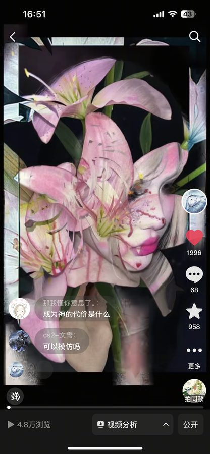
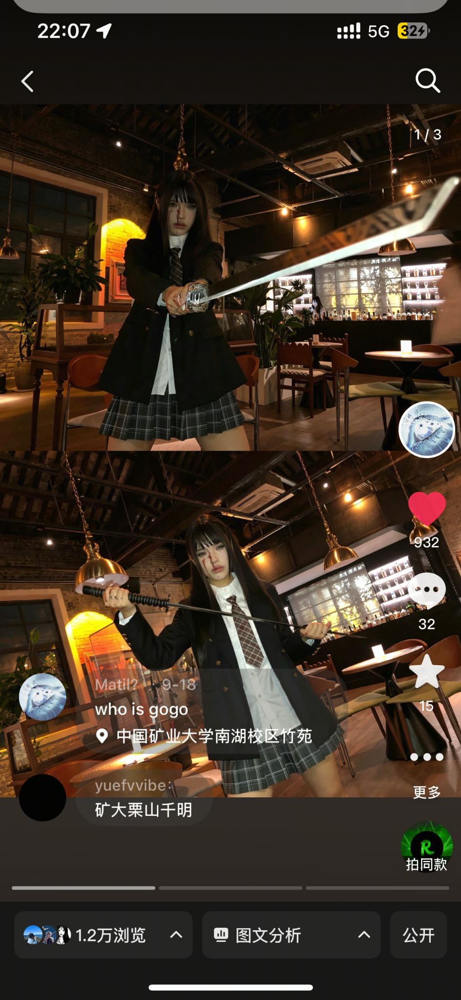
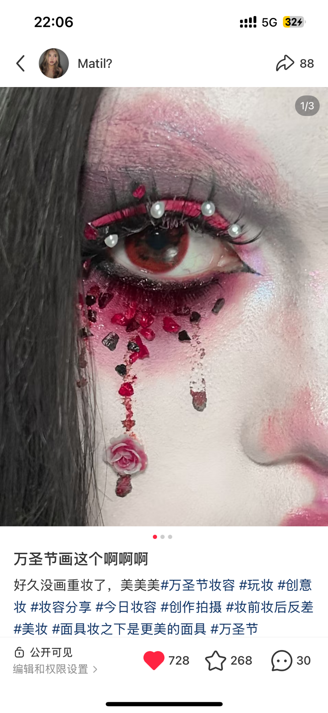
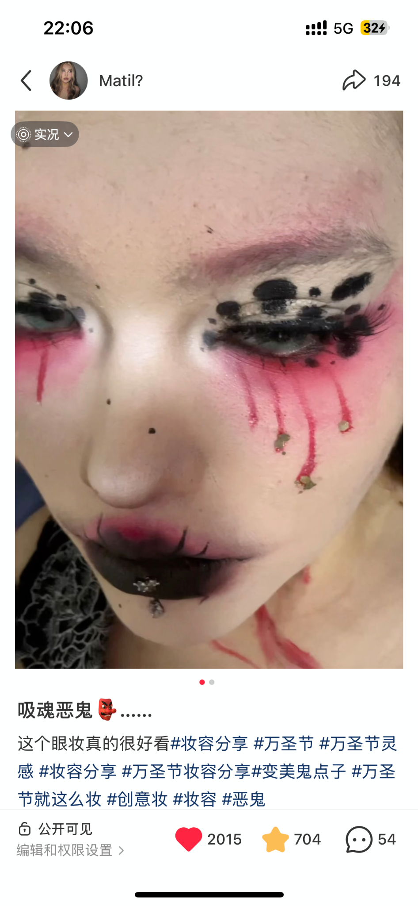

01Selected Works
代表作品
精选已发布作品，展示内容表达、视觉风格与商业拍摄能力。
i情绪内容自然流量
ii审美创作拼贴系列

抖音 · 2025.12 · 花卉人像拼贴
美人心 百合骨
黑底百合花与女性人像多层叠合，暗黑浪漫美学。
17.4万 点赞101.5万 浏览4572 收藏
iii修图教程技法分享

小红书 · 修图教程 · 前后对比
破碎瓷娃娃 p图教程
左原图右成品，完整拆解从妆造照到瓷娃娃质感的后期步骤。
1.2万 点赞6252 收藏163 评论

抖音 · 2025.12 · 修图教程
百合拼贴 修图教程
百合花与人像融合的完整拼贴过程，素材选取、叠合与调色全流程。
1996 点赞4.8万 浏览958 收藏

抖音 · 修图教程 · 雪景氛围
雪景氛围 · P图教程
通过冷调、雪花叠加与画面质感处理，将日常人像转化为冬日雪景氛围；展示教程发布截图。
476赞 · 246收藏 · 发布截图
iv视觉创作 · 真实发布妆容设计 / 场景造型 / 内容反馈
从角色造型、创意眼妆到主题摄影，我尝试把妆容、服装、场景与镜头语言组合成具有辨识度的画面；同时保留真实发布截图，让作品效果与内容反馈可以被一起看见。
下方先展示已发布内容的截图与互动数据，再展示更强调画面质感的造型作品。数据均为截图时的显示值。

剑道主题 · 情境人像
服装、场景和动作共同建立叙事感，强调视觉张力与画面完整度。
1.2万浏览 · 截图数据
万圣节 · 立体装饰眼妆
以珍珠、花朵与红黑配色打造局部妆面，突出细节辨识度。
728赞 · 268收藏 · 截图数据
吸血恶鬼 · 特效眼妆
以泪痕、对比色和不规则图形强化妆面记忆点。
2015赞 · 704收藏 · 截图数据